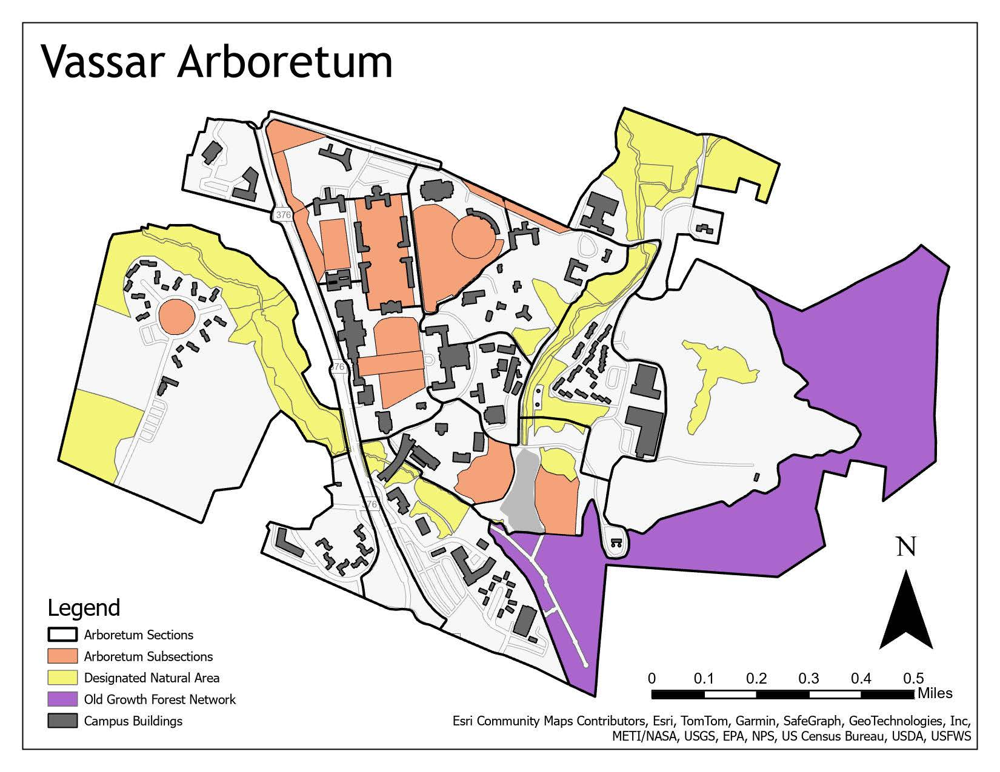
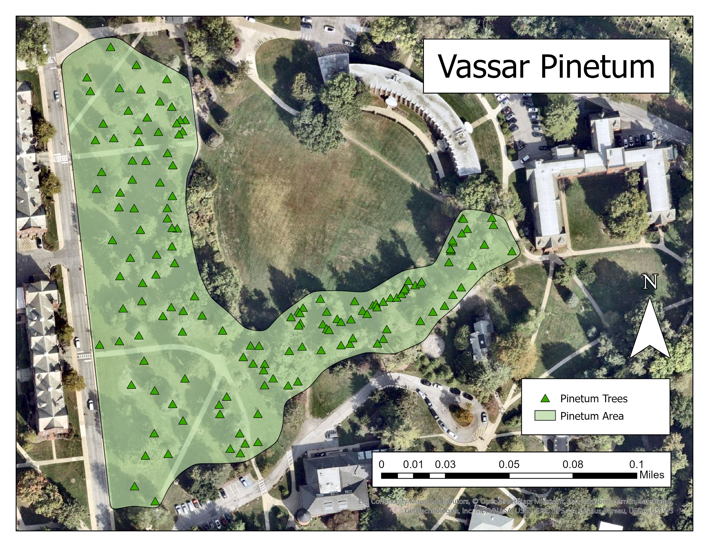
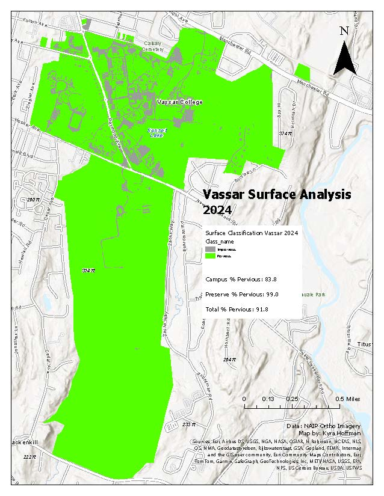

Vassar Arboretum Management Tool
Working with input from multiple parties, I assisted in aggregating tree data and aerial imagery to create a tool that the Vassar Arboretum Committee can use to make decisions.

Project Details / Background
While working in Vassar College’s Office of Sustainability, I was a member of the Vassar Arboretum Committee. A large focus for the committee in 2025/26 was to aggregate all of the tree data and land information over the years. This focus was inspired by the Arboretum’s centennial in 2025. I proposed a mapping project to build a decision making tool the committee can use while meeting indoors.
The map tool has seven layers along with the basemap. There is a layer outlining the entire arboretum area, the “Arboretum Outlineâ€. The ‘Landscape Type’ layer divides the pervious surfaces into the types of management that they are receiving, including both ‘wooded park’ which is most of the college campus. The ‘Old Growth Forest Network’ layer shows the areas of both the Vassar campus and preserve that have been inducted into the Old Growth Forest Network that the college has made a commitment to preserving and stewarding the land so it remains a forest far into the future. The ‘Natural Area Sections’ is a new designation created to highlight areas the committee wants to preserve or restore to unmanicured space. The ‘Active Planning Zones’ layer shows the areas that the Committee is currently or intends to develop plans for tree planting. Lastly, the ‘Arboretum Sections’ layer is how I decided to divide the area into 18 manageable sections to better understand the diverse landscape rather than looking at the land as a whole, which occasionally gives a misrepresentation of tree planting versus removal statistics as well as other factors.
Along with creating this tool, I worked to create accessible PDFs to present to the Committee and to present publicly to those that want to engage with the Vassar Arboretum.
Image Gallery

This is the main accessible PDFs that displays the Vassar Arboretum Sections, Subsections (Active Planning Zones), Natural Areas, the old growth forest network, and building footprints. The image on this web page is not the actual accessible PDF but the file I created has accessibility tags, detailed metadata with a summary, and colors that are easily discernible with common color blindness types.
This is a map highlighting one region in the Vassar Arboretum, the Pinetum, where all of the trees planted in this area are conifers of varying types. This map was created for a public engagement event.
This last image is an analysis of impervious surfaces in the Vassar Arboretum. In the committee bylaws, it states that the arboretum has to maintain a 90% pervious surface cover. I used aerial imagery in this 2024 analysis to confirm that the land was still meeting those guidelines. This analysis helped to inform the arboretum section designation in the decision-making tool and to create the wooded park land type.